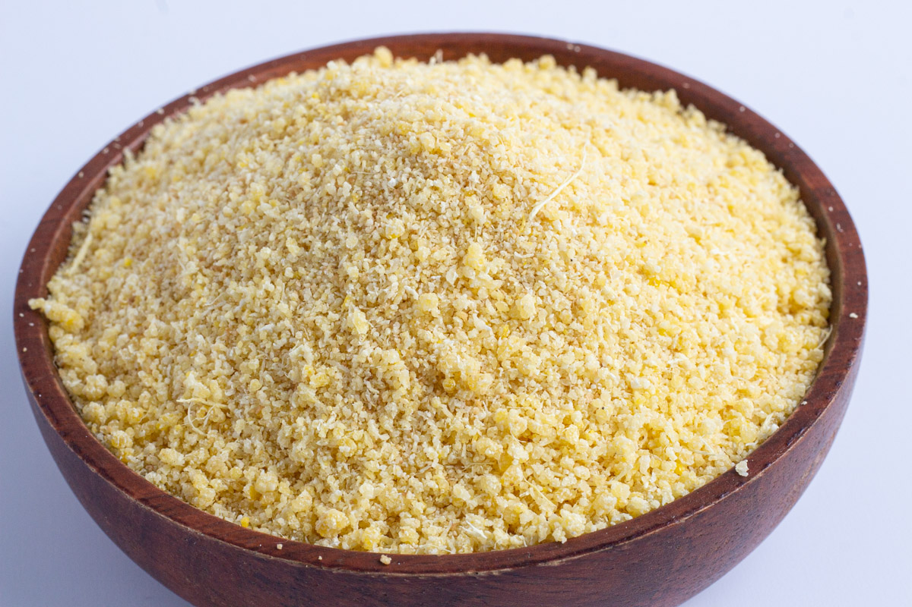
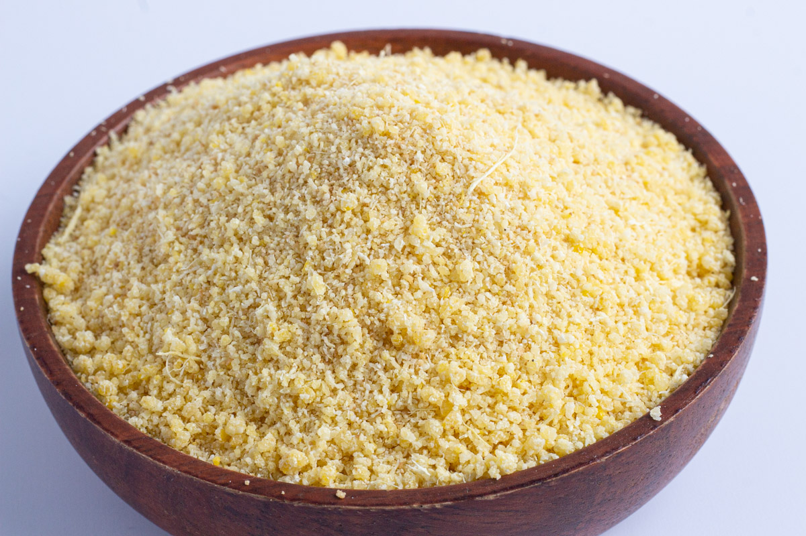
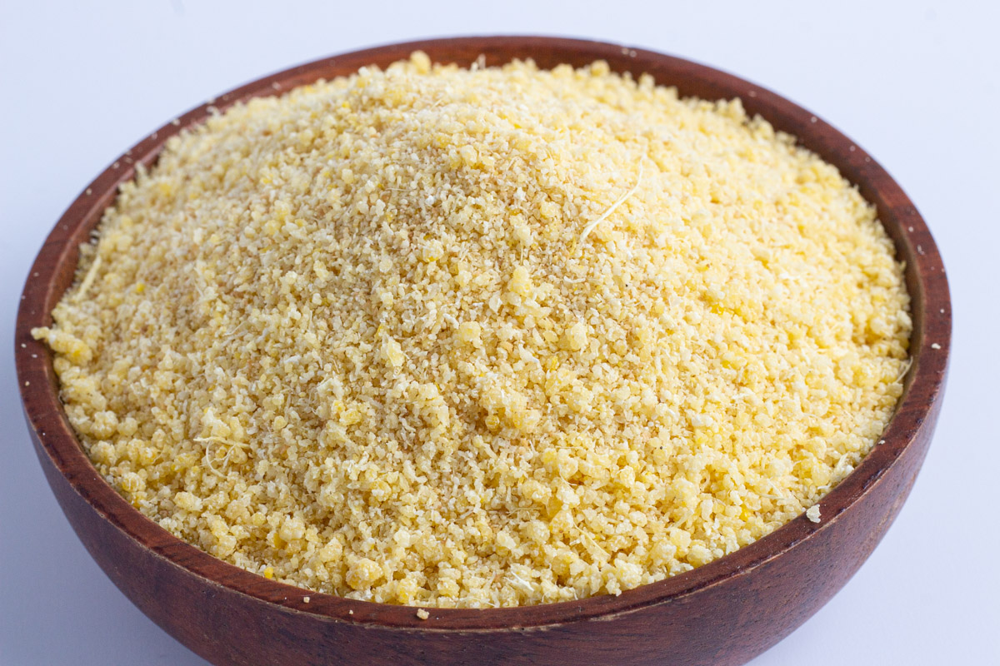

Carbohydrates
Carbohydrates are the body’s main source of energy. They break down into glucose, which fuels daily activities, supports brain function, and helps maintain body temperature.
- White rice
- Yam
- Garri
- Bread
- Plantain

 

Carbohydrates are the body’s main source of energy. They break down into glucose, which fuels daily activities, supports brain function, and helps maintain body temperature.

Proteins are essential for building and repairing tissues, producing enzymes and hormones, and supporting immune function. They are made up of amino acids, which are the building blocks of the body.
Fats provide a concentrated source of energy, help absorb fat-soluble vitamins, and protect vital organs. They also play a role in hormone production and cell structure.


Vitamins are chemical substances that help the body function properly by supporting immunity, vision, blood formation, and healthy skin. They do not provide energy but are essential for preventing diseases like night blindness (lack of vitamin A) and scurvy (lack of vitamin C).


Minerals are inorganic nutrients that are crucial for various bodily functions, including bone health, fluid balance, and nerve transmission. They help prevent conditions such as anemia (lack of iron) and osteoporosis (lack of calcium).

Fiber is a type of carbohydrate that the body cannot digest. It helps regulate the body’s use of sugars, keeping hunger and blood sugar in check. A diet high in fiber can prevent constipation and lower the risk of heart disease.


Water is vital for life, making up a significant portion of the human body. It aids in digestion, nutrient absorption, temperature regulation, and waste elimination. Staying hydrated is essential for overall health and well-being.